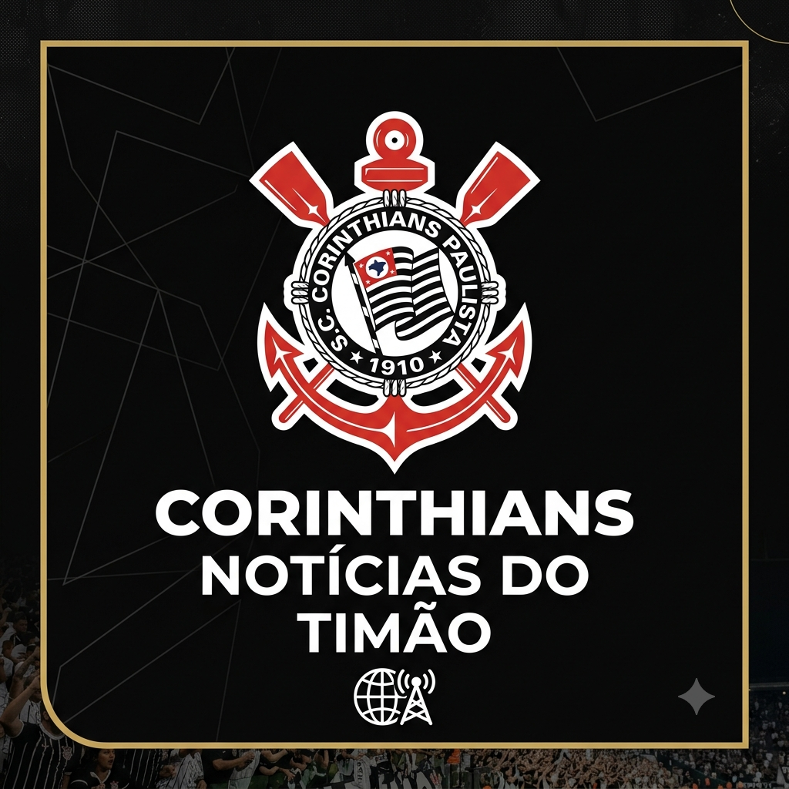

meu primeiro post
por: miguel buono
bem-vindos ao meu novo noticiario do timao! so aqui as melhores noticias do corinthians
as melhores noticias do corinthians em tempo real

por: miguel buono
bem-vindos ao meu novo noticiario do timao! so aqui as melhores noticias do corinthians